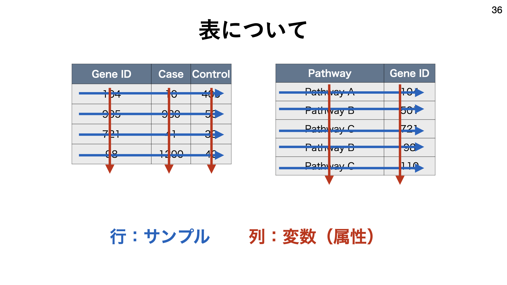
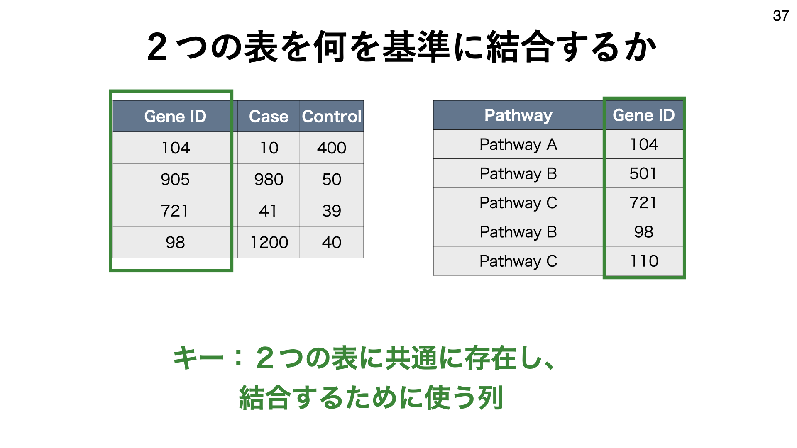
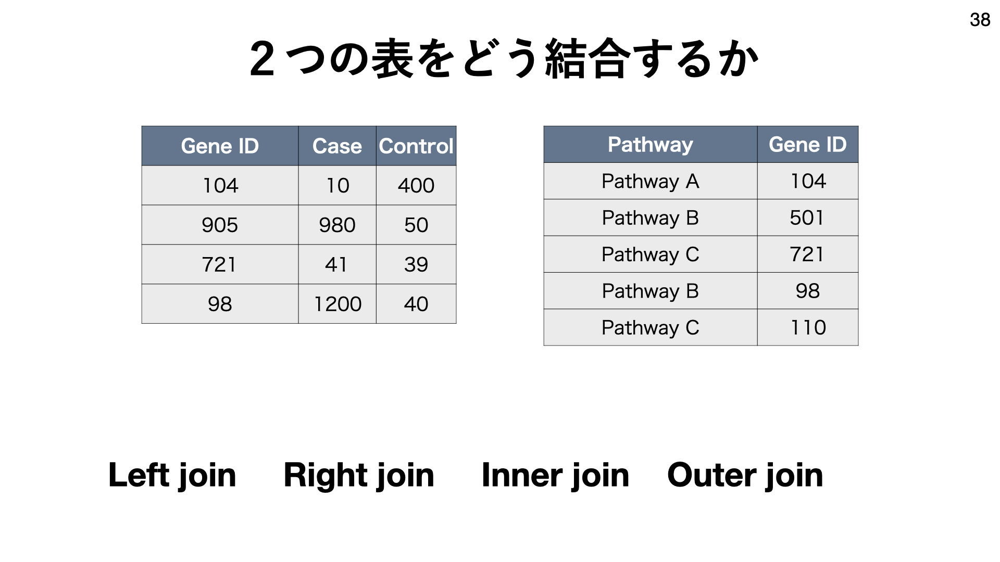
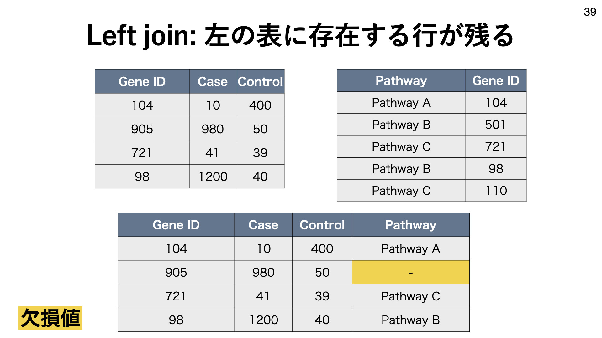
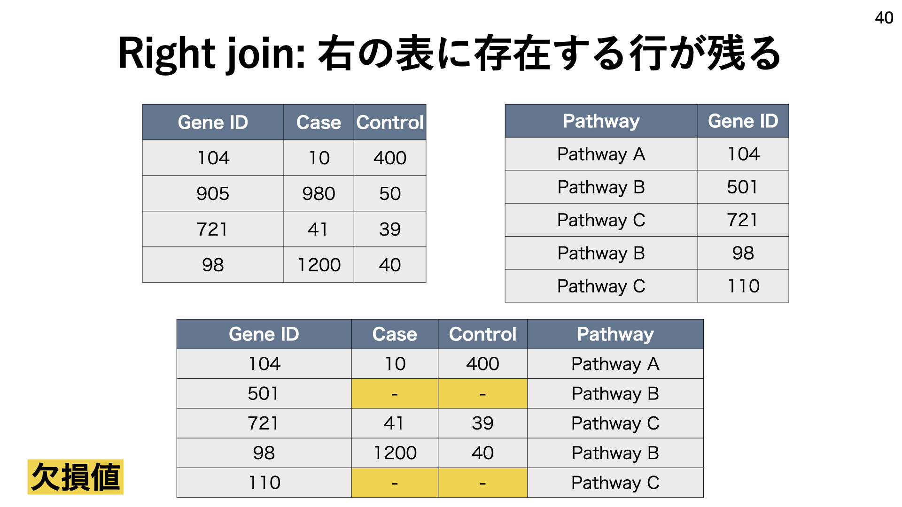
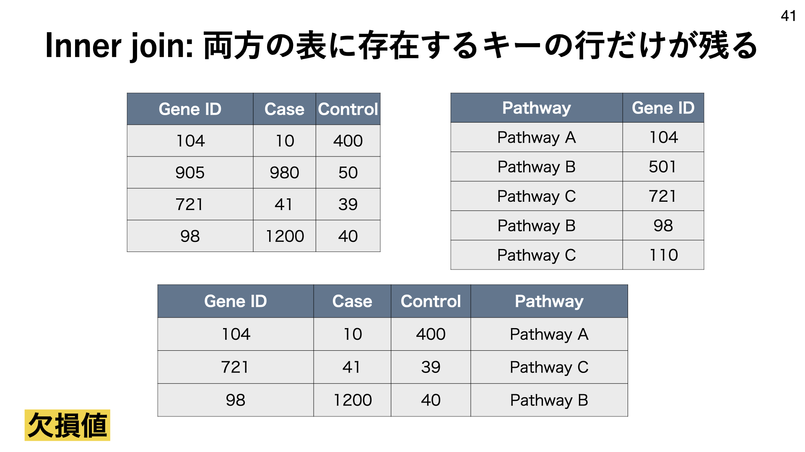
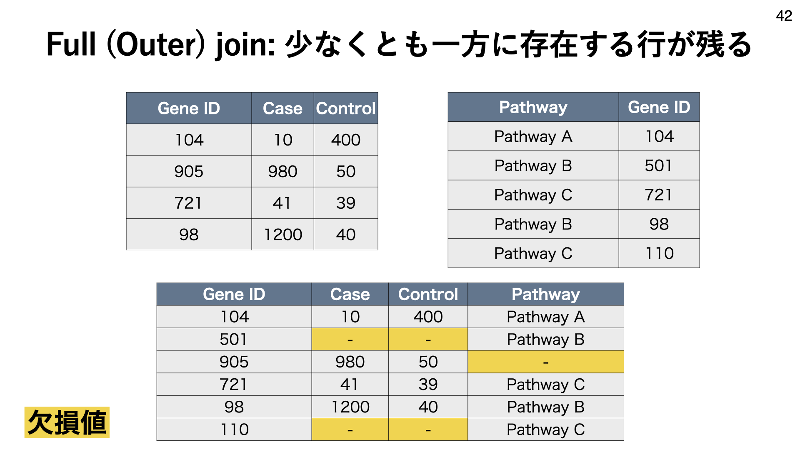

演習B：手順2
1. データのダウンロード
Jupyter Hubのターミナルを開き、以下のコマンドを実行してデータをダウンロードしてください。
mkdir data
cd data
wget https://raw.githubusercontent.com/bioinfo-tsukuba/20201226-EB62104-bioinformatics-course/master/tutorial/data/GSE59831_processed_data_FPKM.txt
wget https://github.com/bioinfo-tsukuba/20201226-EB62104-bioinformatics-course/raw/master/tutorial/data/CCCExplorer/CD11CB_output/gene_exp.diff
wget https://github.com/bioinfo-tsukuba/20201226-EB62104-bioinformatics-course/raw/master/tutorial/data/CCCExplorer/HOM_MouseHumanSequence.rpt
wget https://github.com/bioinfo-tsukuba/20201226-EB62104-bioinformatics-course/raw/master/tutorial/data/CCCExplorer/EP_output/genes.read_group_tracking
wget https://github.com/bioinfo-tsukuba/20201226-EB62104-bioinformatics-course/raw/master/tutorial/data/CCCExplorer/LR_manual_revised.txt
cd ../
2. tidyverse について学ぶ
以降は R のノートブックを作成して始めましょう
- R のノートブックを新しく作成してください
- タイトルを "training_B" に変更してください
tidyverse とは
- データサイエンスに便利なパッケージの集合体
- 今日の授業で毎回使用します
tidyverse を使うには
そのノートブックの中で一度、以下を実行する必要があります。
library(tidyverse)
以下のような(感じの）メッセージが出てくると思います（問題ありません）
── [1mAttaching packages[22m ─────────────────────────────────────── tidyverse 1.3.0 ──
[32m✔[39m [34mggplot2[39m 3.3.3 [32m✔[39m [34mpurrr [39m 0.3.4
[32m✔[39m [34mtibble [39m 3.0.5 [32m✔[39m [34mdplyr [39m 1.0.3
[32m✔[39m [34mtidyr [39m 1.1.2 [32m✔[39m [34mstringr[39m 1.4.0
[32m✔[39m [34mreadr [39m 1.4.0 [32m✔[39m [34mforcats[39m 0.5.1
── [1mConflicts[22m ────────────────────────────────────────── tidyverse_conflicts() ──
[31m✖[39m [34mdplyr[39m::[32mfilter()[39m masks [34mstats[39m::filter()
[31m✖[39m [34mdplyr[39m::[32mlag()[39m masks [34mstats[39m::lag()
テーブル（表）データの読み込み： read_tsv(), read_csv()
- データの読み込みには
read_tsv(),read_csv()を用います - TSV はタブ区切りファイル、CSV はコンマ区切りファイルのことです
- 1.でダウンロードしたファイルがTSVかCSVかは、ターミナルで
headコマンドで確かめられます
- 1.でダウンロードしたファイルがTSVかCSVかは、ターミナルで
- 例えば、
GSE59831_processed_data_FPKM.txtはタブ区切りファイルなので、read_tsv()で読み込むことができますcol_names=TRUEは、１行目を列名として扱ってほしいという意味です。
以下のコマンドは、 GSE59831_processed_data_FPKM.txt を読み込み、 df1 というオブジェクトに格納することを表します。
df1 <- read_tsv("data/GSE59831_processed_data_FPKM.txt", col_names=TRUE)
データテーブル（表）の形を調べるのに便利な関数： dim(), head(), str()
head()はデータフレームの最初の6行を表示しますdim()はデータフレームの行数と列数を出力しますstr()は行数と列数のほか、データフレームがどんな列（列名、列のデータ型）を持つかを表示しますnrow()、ncol()はそれぞれ行数、列数を出力します
以下に実行例を示します。
head(df1)
こんな結果が返ってきます：
| mice_gene_symbol | human_gene_symbol | Tum1 | Tum2 | Tum3 | WT1 | WT2 | Tum4 | Tum5 | WT3 | ⋯ | Tum11 | WT8 | WT9 | WT10 | Tum12 | Tum13 | Tum14 | WT11 | WT12 | WT13 |
|---|---|---|---|---|---|---|---|---|---|---|---|---|---|---|---|---|---|---|---|---|
| <chr> | <chr> | <dbl> | <dbl> | <dbl> | <dbl> | <dbl> | <dbl> | <dbl> | <dbl> | ⋯ | <dbl> | <dbl> | <dbl> | <dbl> | <dbl> | <dbl> | <dbl> | <dbl> | <dbl> | <dbl> |
| 0610007P14Rik | C14orf1 | 9.31368 | 10.13680 | 12.26660 | 11.92950 | 11.34170 | 10.45680 | 10.44590 | 13.05840 | ⋯ | 21.99580 | 33.98430 | 23.50140 | 24.80460 | 17.16570 | 12.51170 | 16.03630 | 14.69160 | 14.03290 | 14.20440 |
| 0610009D07Rik | SF3B14 | 25.35280 | 32.25990 | 26.61000 | 29.73440 | 37.16520 | 37.57330 | 30.74340 | 32.30680 | ⋯ | 28.76030 | 21.51540 | 30.83840 | 19.26180 | 35.14690 | 33.53620 | 42.73760 | 29.27860 | 29.37960 | 28.06600 |
| 0610009O20Rik | KIAA0141 | 12.45760 | 10.17690 | 11.95220 | 10.62740 | 7.04763 | 9.63765 | 11.11900 | 13.35890 | ⋯ | 20.57930 | 18.12230 | 18.65090 | 18.58170 | 15.60410 | 15.34920 | 13.04400 | 16.76130 | 15.91300 | 18.05510 |
| 0610010F05Rik | KIAA1841 | 5.84091 | 6.54488 | 6.65366 | 4.80074 | 6.06263 | 5.57042 | 5.21223 | 5.56449 | ⋯ | 8.04684 | 5.92199 | 6.23551 | 4.73364 | 5.98708 | 4.26902 | 4.16373 | 3.47511 | 3.71875 | 3.95344 |
| 0610010K14Rik | C17orf49 | 25.63690 | 24.08560 | 20.17560 | 25.34280 | 29.14040 | 31.46110 | 28.30990 | 22.17650 | ⋯ | 18.00200 | 24.00260 | 21.85860 | 23.72630 | 28.46520 | 31.19330 | 26.40880 | 32.53430 | 26.93620 | 29.38080 |
| 0610011F06Rik | C16orf13 | 3.48174 | 5.79169 | 3.73809 | 5.94575 | 5.98899 | 9.04125 | 5.84235 | 7.36357 | ⋯ | 42.61460 | 38.91730 | 33.56900 | 37.34490 | 20.33750 | 18.81900 | 14.17990 | 14.93870 | 16.12340 | 13.39220 |
今度はこれを実行してみましょう：
dim(df1)
こんな結果が返ってきます（行数、列数）：
16024 29
今度はこれを実行してみましょう：
str(df1)
[16,024 × 29] は行数と列数を表します。また、 $ で始まる行は、各列にどのような値が格納されているかを表します：
tibble [16,024 × 29] (S3: spec_tbl_df/tbl_df/tbl/data.frame)
$ mice_gene_symbol : chr [1:16024] "0610007P14Rik" "0610009D07Rik" "0610009O20Rik" "0610010F05Rik" ...
$ human_gene_symbol: chr [1:16024] "C14orf1" "SF3B14" "KIAA0141" "KIAA1841" ...
$ Tum1 : num [1:16024] 9.31 25.35 12.46 5.84 25.64 ...
$ Tum2 : num [1:16024] 10.14 32.26 10.18 6.54 24.09 ...
$ Tum3 : num [1:16024] 12.27 26.61 11.95 6.65 20.18 ...
$ WT1 : num [1:16024] 11.9 29.7 10.6 4.8 25.3 ...
$ WT2 : num [1:16024] 11.34 37.17 7.05 6.06 29.14 ...
$ Tum4 : num [1:16024] 10.46 37.57 9.64 5.57 31.46 ...
$ Tum5 : num [1:16024] 10.45 30.74 11.12 5.21 28.31 ...
$ WT3 : num [1:16024] 13.06 32.31 13.36 5.56 22.18 ...
$ WT4 : num [1:16024] 8.74 25.08 12.65 3.93 28.72 ...
$ Tum6 : num [1:16024] 3.9 31.15 3.93 1.56 22.08 ...
$ Tum7 : num [1:16024] 2.54 33.48 3.74 1.68 19.04 ...
$ Tum8 : num [1:16024] 3.34 36.3 3.67 1.24 18.23 ...
$ WT5 : num [1:16024] 1.14 26.84 2.88 1.05 6.45 ...
$ WT6 : num [1:16024] 1.553 24.426 3.984 0.645 11.169 ...
$ WT7 : num [1:16024] 2.7 22.99 3.74 1.1 8.6 ...
$ Tum9 : num [1:16024] 21.51 30.39 19.15 7.35 20.08 ...
$ Tum10 : num [1:16024] 25.08 23.83 20.82 7.22 22.06 ...
$ Tum11 : num [1:16024] 22 28.76 20.58 8.05 18 ...
$ WT8 : num [1:16024] 33.98 21.52 18.12 5.92 24 ...
$ WT9 : num [1:16024] 23.5 30.84 18.65 6.24 21.86 ...
$ WT10 : num [1:16024] 24.8 19.26 18.58 4.73 23.73 ...
$ Tum12 : num [1:16024] 17.17 35.15 15.6 5.99 28.47 ...
$ Tum13 : num [1:16024] 12.51 33.54 15.35 4.27 31.19 ...
$ Tum14 : num [1:16024] 16.04 42.74 13.04 4.16 26.41 ...
$ WT11 : num [1:16024] 14.69 29.28 16.76 3.48 32.53 ...
$ WT12 : num [1:16024] 14.03 29.38 15.91 3.72 26.94 ...
$ WT13 : num [1:16024] 14.2 28.07 18.06 3.95 29.38 ...
- attr(*, "spec")=
.. cols(
.. mice_gene_symbol = [31mcol_character()[39m,
.. human_gene_symbol = [31mcol_character()[39m,
.. Tum1 = [32mcol_double()[39m,
.. Tum2 = [32mcol_double()[39m,
.. Tum3 = [32mcol_double()[39m,
.. WT1 = [32mcol_double()[39m,
.. WT2 = [32mcol_double()[39m,
.. Tum4 = [32mcol_double()[39m,
.. Tum5 = [32mcol_double()[39m,
.. WT3 = [32mcol_double()[39m,
.. WT4 = [32mcol_double()[39m,
.. Tum6 = [32mcol_double()[39m,
.. Tum7 = [32mcol_double()[39m,
.. Tum8 = [32mcol_double()[39m,
.. WT5 = [32mcol_double()[39m,
.. WT6 = [32mcol_double()[39m,
.. WT7 = [32mcol_double()[39m,
.. Tum9 = [32mcol_double()[39m,
.. Tum10 = [32mcol_double()[39m,
.. Tum11 = [32mcol_double()[39m,
.. WT8 = [32mcol_double()[39m,
.. WT9 = [32mcol_double()[39m,
.. WT10 = [32mcol_double()[39m,
.. Tum12 = [32mcol_double()[39m,
.. Tum13 = [32mcol_double()[39m,
.. Tum14 = [32mcol_double()[39m,
.. WT11 = [32mcol_double()[39m,
.. WT12 = [32mcol_double()[39m,
.. WT13 = [32mcol_double()[39m
.. )
データフレームから特定の条件に当てはまる行を抽出する： filter()
filter()は第１引数にデータフレーム、第２引数に条件式を書くと、条件に当てはまる行を抽出する
以下に例を示します
# Tum1 列の値が100より大きい行を抽出
filter(df1, Tum1 > 100)
# Tum1 列の値が100より大きく、WT1 列の値が10より小さい行を抽出
# (& は同時に満たすべき条件を組み合わせる)
filter(df1, Tum1 > 100 & WT1 <10)
# Tum1 列の値が100より大きいか、Tum2 列の値が100より大きい行を抽出
# (| はいずれか満たすべき条件を組み合わせる)
filter(df1, Tum1 > 100 | Tum2 > 100)
# 「Tum1 列の値が100より大きいか、Tum2 列の値が100より大きい」
# かつ「WT1列の値が10より小さいか、WT2列の値が10より小さい」行を抽出
# (カッコで囲むことでひとまとまりとして扱える)
filter(df1, (Tum1>100 | Tum2>100) & (WT1<10 | WT2<10) )
なお、抽出された結果は、元のデータフレーム自体には保存されないため、別のオブジェクトに格納する必要がある
df1_sub <- filter(df1, Tum1 > 100)
# 上と同じ意味
filter(df1, Tum1 > 100) -> df1_sub
特定の列を抽出する： select()
select()は第１引数にデータフレーム、第２（以降）引数に列名を書くと、条件に当てはまる列を抽出する- 列名にスペースが入っている場合はバックスラッシュ（ ` ）で囲む必要がある
以下に例を示す
# mice_gene_symbol 列を抽出する
select(df1, mice_gene_symbol)
# mice_gene_symbol 列とWT1列を抽出する
select(df1, mice_gene_symbol, WT1)
# mice_gene_symbol 列を抽出する
select(df1, mice_gene_symbol, human_gene_symbol, WT1)
# mice_gene_symbol 列以外を抽出する
# (-を前につけるとその列を除く)
select(df1, -mice_gene_symbol)
なお、抽出された結果は、元のデータフレーム自体には保存されないため、別のオブジェクトに格納する必要がある
df1_selected <- select(df1, mice_gene_symbol, WT1)
# 上と同じ意味
select(df1, mice_gene_symbol, WT1) -> df1_selected
パイプ演算子 |>
- ネイティブパイプとも呼ばれる
|>→ これのこと
以下に例を示す
# str(df1) と同じ
df1 |> str
# select(df1, mice_gene_symbol, WT1) と同じ
df1 |> select(mice_gene_symbol, WT1)
# |>の後に改行やインデントが入っても同じ意味
df1 |>
select(mice_gene_symbol, WT1)
# select(filter(df1, Tum1>100), WT) と同じ意味
# (パイプをつなげることもできる)
df1 |>
filter(Tum1>100) |>
select(mice_gene_symbol, WT1)
# 結果を格納することもできる
df1 |>
filter(Tum1>100) |>
select(mice_gene_symbol, WT1) -> df1_filtered_selected
列を加える： mutate()
mutate()は新しい列を加えることができる- 第２引数では、
=の前に新しい列名を書き、=の後に条件を書く
- 第２引数では、
mutate(df1, Tum123_mean = (Tum1+Tum2+Tum3)/3)
# 上と同じ
df1 |>mutate(Tum123_mean = (Tum1+Tum2+Tum3)/3)
# 同時に複数も可能
mutate(df1, Tum123_mean = (Tum1+Tum2+Tum3)/3, WT12_mean = (WT1+WT2)/2)
# 上と同じ
df1 |>mutate(Tum123_mean = (Tum1+Tum2+Tum3)/3, WT12_mean = (WT1+WT2)/2)
２つの行を結合する（JOIN）
- ２つの行を結合する操作を一般に JOIN (じょいん)と呼ぶ
- 
- ２つの表を結合するための列をキー（key）と呼ぶ
- 
join にはいくつか種類がある
- 
- Inner join
- 
- Left join
- 
- Right join
- 
- Full (Outer) join
- 
tidyverseのdplyrパッケージでJOINができる
- inner join:
inner_join(x, y, by = "") - left join:
left_join(x, y, by = "") - right join:
right_join(x, y, by = "") - full (outer) join:
full_join(x, y, by = "") - ※x, y はそれぞれデータフレームを指定する
- ※byにはキーの列を指定する
- inner join:
df2 <- read_tsv("data/HOM_MouseHumanSequence.rpt", col_names=TRUE)
# (キーの名前が２つの表で違う時は以下のように書くとよい)
inner_join(df1, df2, by = c("mice_gene_symbol"="Symbol"))
# 上と同じ
df1 |>
inner_join(df2, by = c("mice_gene_symbol"="Symbol"))
# join の結果を新たなオブジェクトに格納する
df1 |>
inner_join(df2, by = c("mice_gene_symbol"="Symbol")) -> df1_and_2